You said (World 1 · hole 7): "there is a bush but it doesn't do anything at all". The bush was really a long-grass patch that slows the ball — the painting turned it into a solid bush, and a firm putt barely slowed. Fixed for every hole with long grass (World 1, 2, 3 and 4).
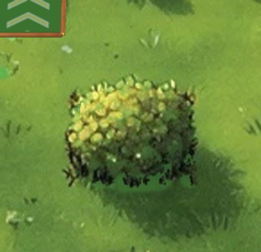
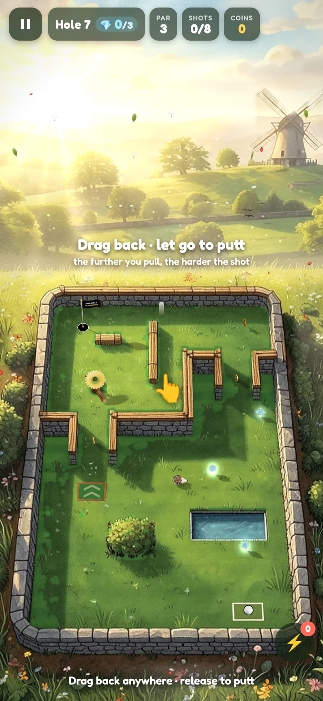
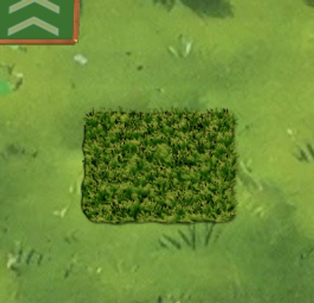
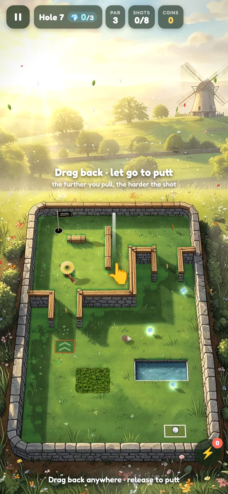
Putt through the grass rolls 60% (was 40%) shorter than on bare turf. Par: 3, unchanged (expert bot 2.83 → 2.58 Hard, 2.58 Easy)
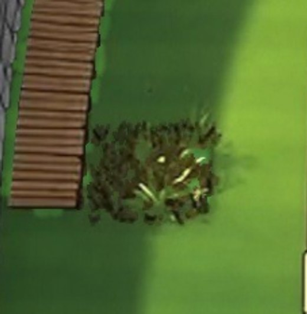
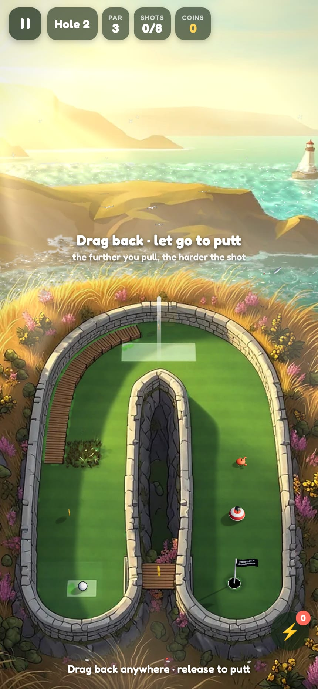
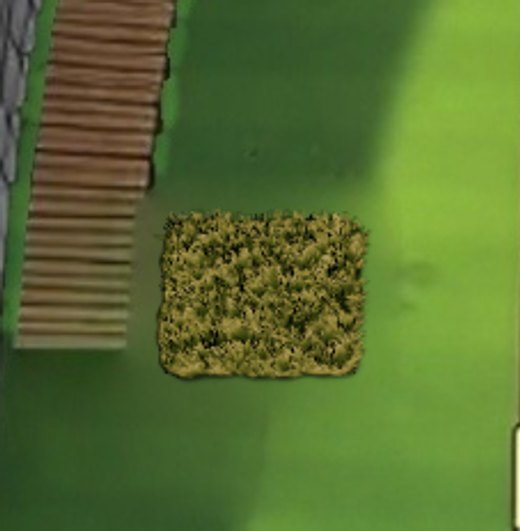
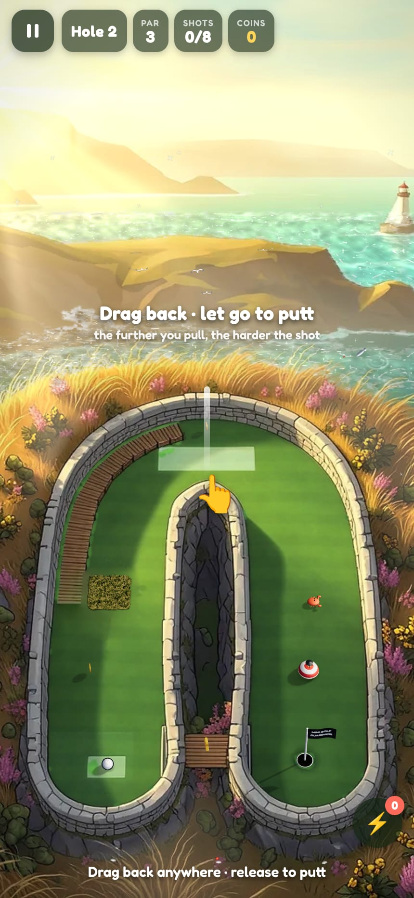
Putt through the grass rolls 51% (was 28%) shorter than on bare turf. Par: 3, unchanged (expert bot 2.50 → 2.33)
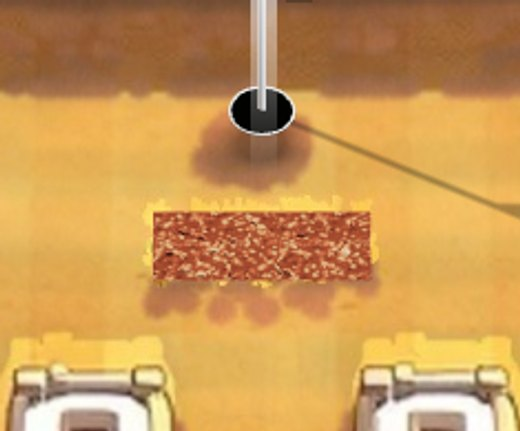
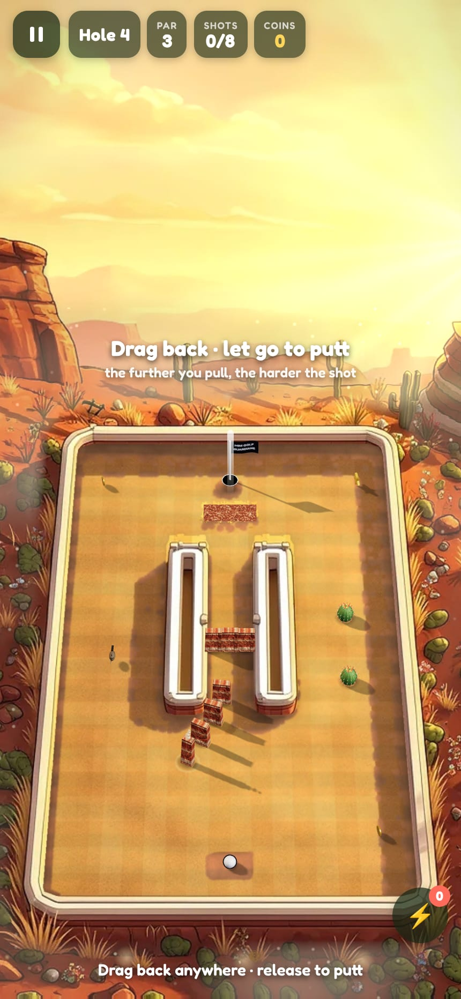
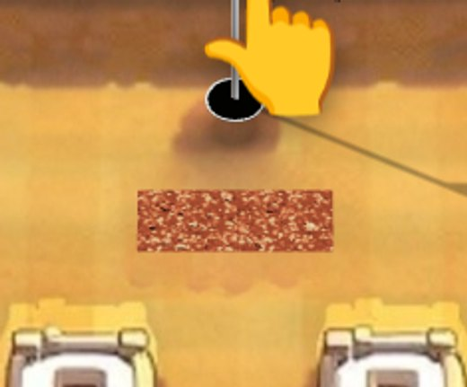
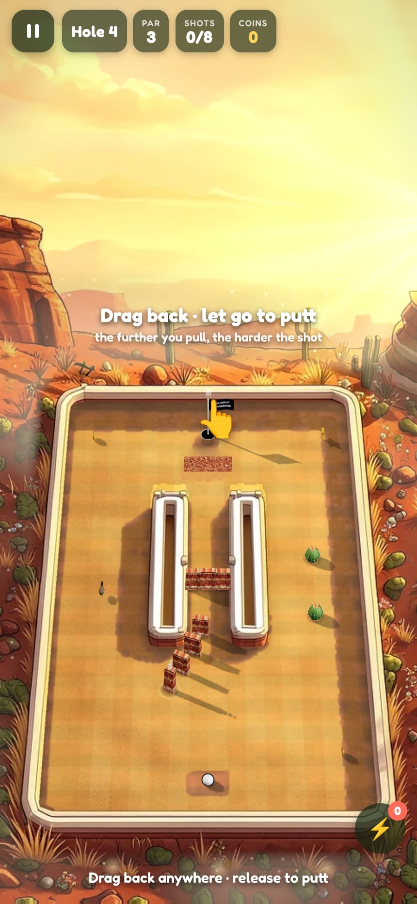
Putt through the grass rolls 45% (was 25%) shorter than on bare turf. Par: 3, unchanged (expert bot 2.17 → 2.17)
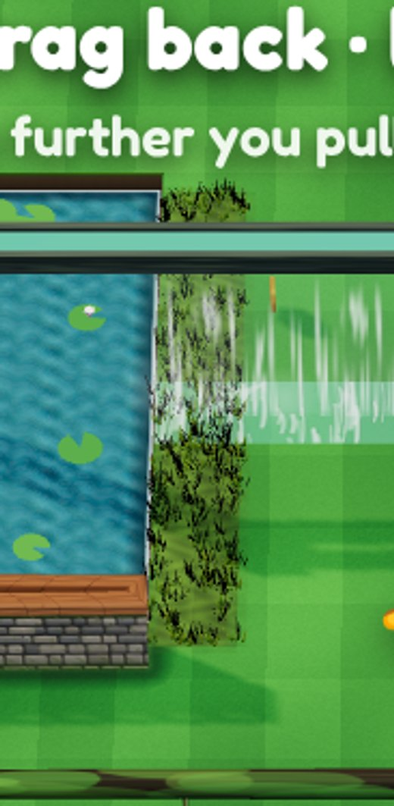
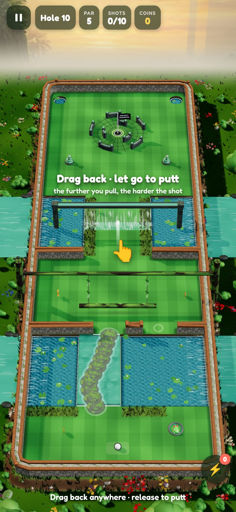
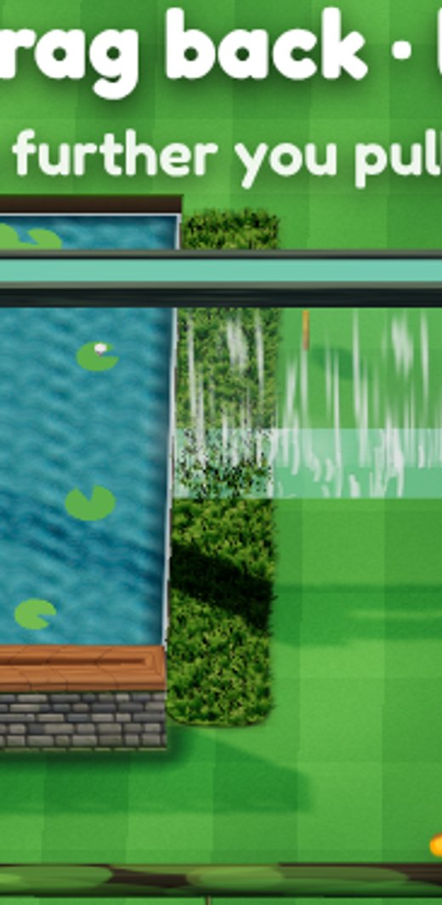
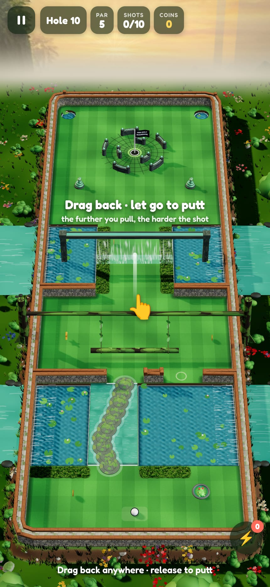
Putt through the grass rolls 65-76% (was 53-70%) shorter than on bare turf. Par: 5, unchanged (expert bot 4.96 → 5.21)
Nothing changes in the live game until you say yes.